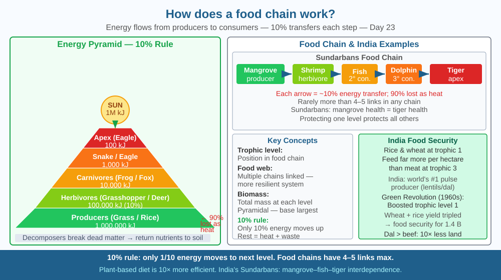

By the end of this lesson, you should be able to explain how energy moves through a food chain, state the 10 % rule, and predict what happens to carnivores if all herbivores disappear.
A tiger weighs about 220 kg. To maintain that weight, it needs to eat about 50 deer a year. Each deer eats hundreds of kilograms of grass per year. Why does each level need so much more food from the level below? And why can't we just have more tigers?
A food chain shows the sequence of organisms through which energy and nutrients flow.
Trophic levels: 1. Producers (plants, algae): Convert sunlight + CO₂ + water → glucose via photosynthesis. Store chemical energy in their tissues. 2. Primary consumers (herbivores): Eat producers. Examples: deer, grasshoppers, cows, caterpillars. 3. Secondary consumers (carnivores / omnivores): Eat herbivores. Examples: frogs, foxes, tigers. 4. Tertiary consumers (apex predators): Eat secondary consumers. Examples: eagles, sharks, tigers. 5. Decomposers: Bacteria and fungi break down dead matter, returning nutrients to soil.
The 10 % rule (ecological efficiency): When energy passes from one trophic level to the next, only about 10 % is transferred. The rest is lost as heat (respiration), waste, or indigestible material. So: - 1,000 kg of grass → 100 kg of deer → 10 kg of tiger (tissue gain) - A forest must support 10× the biomass of deer as it does tigers
This is why: - Food chains rarely exceed 4–5 links (not enough energy at the top) - Eating lower on the food chain is more efficient — 1 kg of rice or dal needs far less land and water than 1 kg of beef
Food web vs food chain: Real ecosystems have interconnected food webs (multiple paths), not simple chains, making them more resilient. Remove one species and others adjust — up to a point.
Think of a food chain as a leaky bucket relay race. Each runner carries a bucket of water (energy) and passes it to the next. But every bucket has holes — only 10 % of the water reaches the next runner. By the time four runners have carried the bucket, almost nothing is left.
Apply this step by step to a Sundarbans food chain: 1. Sunlight arrives — mangrove trees and phytoplankton capture about 1 % of solar energy via photosynthesis and store it as sugar (trophic level 1). 2. Small fish and crabs eat the mangrove leaves and plankton — they keep 10 % of that energy as body mass (trophic level 2). The rest fuels their swimming, digestion, and heat. 3. Medium fish eat the small fish — again, 10 % retained. At this level, you need 100 kg of phytoplankton to produce 1 kg of medium fish (trophic level 3). 4. A tiger or dolphin eats the medium fish — at the apex, only 0.1 % of original plant energy has survived four transfers (trophic level 4).
The leaky-bucket image explains two things at once: why forests need vast areas of vegetation to support a single tiger, and why a vegetarian diet feeds more people per hectare than a meat-based diet.
The SVG shows a triangular energy pyramid divided into four horizontal bands. The widest base layer (dark green) is labelled "Producers — 1,000,000 kJ" and shows an illustration of grass and mangrove leaves. The next band (light green) is labelled "Primary consumers — 100,000 kJ" with silhouettes of deer and grasshoppers. The third band (orange) shows "Secondary consumers — 10,000 kJ" with frog and fox silhouettes. The narrow apex (red) is labelled "Tertiary consumers — 1,000 kJ" and shows a tiger outline. On the right side of each band, a downward arrow labeled "90 % lost as heat and waste" illustrates what is lost at each transfer. A separate inset at the bottom right shows a food web for the Sundarbans: mangrove → crab → small fish → Irrawaddy dolphin, with a second branch: mangrove leaves → deer → tiger. The web lines crossing make the resilience argument visual.

India's food security debate often involves trophic levels without naming them. Rice and wheat (trophic level 1) can feed far more people per hectare than meat. India consumes mostly vegetarian diet by necessity and culture — in fact, India produces more pulses (lentils, chickpeas) than any other country. The green revolution shifted India's food chain by massively increasing grain production at trophic level 1. In Sundarbans (West Bengal), the food chain includes: mangrove → fish/crab → dolphin/tiger, all interdependent. Tiger conservation there is also fish conservation and mangrove conservation.
Energy pyramid calculation: Start with 1,000,000 kJ of sunlight captured by grass in a field. Apply the 10 % rule: - Grass absorbs 1,000,000 kJ - Grasshopper (primary consumer): 100,000 kJ - Frog (secondary consumer): 10,000 kJ - Snake (tertiary consumer): 1,000 kJ - Eagle (apex predator): 100 kJ
For the eagle to live on 100 kJ (about 1/40th of a chapati's energy), the entire field's sunlight energy had to flow through four other organisms. Draw this as a pyramid and label each level.
Now add a second chain from the same grass: grass → locust → sparrow. At the sparrow level, how much energy is available compared to the eagle? Which chain is more efficient, and why does it matter for understanding why sparrows vastly outnumber eagles?
The 10 % rule is an average — actual ecological efficiency varies from 5 % to 20 % depending on the organism and ecosystem. Marine ecosystems tend to be more efficient (phytoplankton → zooplankton → fish is a very rapid transfer). A surprising implication: the global human population would require roughly 10× more agricultural land to sustain itself if everyone ate at the same trophic level as a carnivore (e.g., eating beef). Some scientists argue that switching to plant-based diets is the single most effective individual action to reduce land use and greenhouse gas emissions.
Predict: India's per-capita meat consumption has doubled in the last 20 years. If it doubles again by 2050 while the population grows to 1.6 billion, how much additional agricultural land would be required compared to if diets stayed plant-based? Use the 10 % rule to estimate the ratio, then suggest one food-system change that would reduce this land pressure without requiring people to become fully vegetarian.
What does a food chain show about energy in an ecosystem?
Correct answer: C
Why is understanding energy transfer in a food chain useful?
Correct answer: C
If all herbivores in a food chain disappeared, what would you predict?
Correct answer: B
A grassland ecosystem in Rajasthan has the following energy values measured by ecologists: grass produces 800,000 kJ/hectare/year; blackbuck (antelope) population converts 72,000 kJ/hectare/year into body mass; wolves convert 6,500 kJ/hectare/year.
Calculate the actual ecological efficiency at each transfer step (grass → blackbuck, and blackbuck → wolf). Compare these to the standard 10 % rule. The wolf population is now hunted and reduced by 80 %. Using your knowledge of trophic relationships, predict: (a) what happens to blackbuck population, (b) what happens to grass cover, and (c) whether a secondary predator (say, jackals eating rabbits at a parallel chain) would be affected. Justify each prediction with a mechanism, not just a direction.
The entire biomass of all wild land mammals on Earth today weighs less than the biomass of livestock (cattle, sheep, pigs, poultry) raised for human food. Wild mammals represent just 4 % of all mammal biomass; livestock represent 60 %; humans represent 36 %. This is a direct consequence of the 10 % rule — feeding 8 billion people at even a modest meat-eating trophic level requires so much primary production (grain and grass) that it has effectively replaced wild ecosystems with managed ones. The food chain is not just a biology concept; it is the reason most of Earth's land surface looks the way it does.
Only 10 % of energy passes from one trophic level to the next — which is why ecosystems need vastly more plant biomass than herbivore biomass, and more herbivores than carnivores, making every top predator dependent on a huge base of producers.